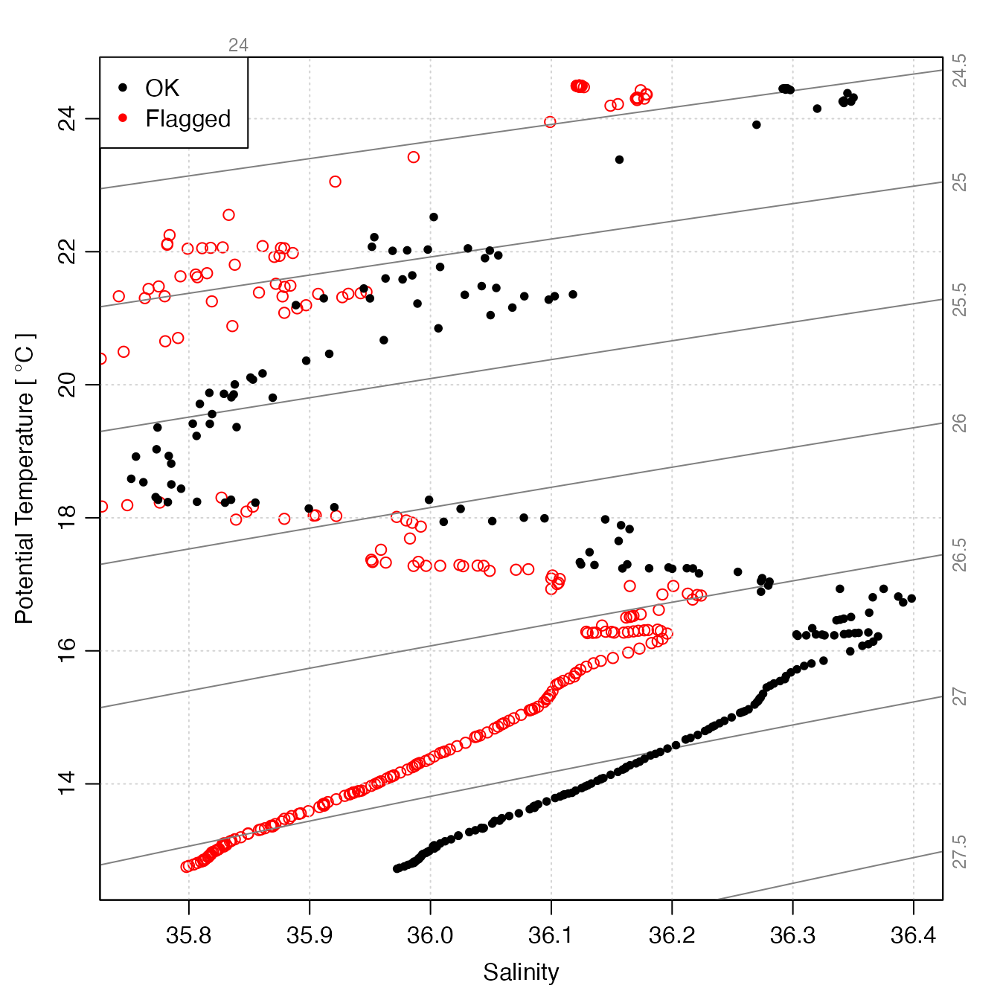

This function examines the quality-control (QC) flags within an argoFloats
object that was created by readProfiles(). By default, it replaces all suspicious
data with NA values, so they will not appear in plots or be considered in calculations.
This is an important early step in processing, because suspicious Argo floats commonly
report data that are suspicious based on statistical and physical measures, as
is illustrated in the “Examples” section.
applyQC(x, flags = NULL, actions = NULL, debug = 0)
| x | an |
|---|---|
| flags | a vector of integers that are the quality-control flag
values for data that are to be set to |
| actions | the actions to perform. The default, |
| debug | an integer passed to |
A copy of x but with each of the objects within its
data slot having been passed through oce::handleFlags,argo-method().
The work is done by using oce::handleFlags,argo-method()
on each of the profiles stored within the object. In most cases, only
the object needs to be specified, for the default actions coincide with
common conventions for flags in Argo data.
Carval, Thierry, Bob Keeley, Yasushi Takatsuki, Takashi Yoshida, Stephen Loch Loch, Claudia Schmid, and Roger Goldsmith. Argo User’s Manual V3.3. Ifremer, 2019. https://doi.org/10.13155/29825.
Dan Kelley
# \dontrun{ library(argoFloats) # Contrast TS diagrams for raw and flag-handled data data(index) i <- subset(index, 1:5) # first 5 profiles#>#> | | | 0% | |============== | 20% | |============================ | 40% | |========================================== | 60% | |======================================================== | 80% | |======================================================================| 100%#> Warning: Of 5 profiles read, 5 have >10% of salinity values with QC flag of 4, signalling bad data. #> The indices of the bad profiles are as follows. #> 1 2 3 4 5#> Warning: Of 5 profiles read, 5 have >10% of temperature values with QC flag of 4, signalling bad data. #> The indices of the bad profiles are as follows. #> 1 2 3 4 5# }